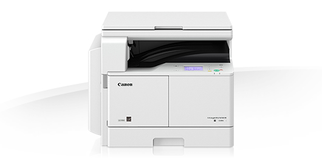

Торговый портал OfficeShop - первая и крупнейшая площадка белорусской интернет-торговли, которая помогает покупателям выбирать товары в интернет-магазинах Беларуси. Работает с апреля 2000 года. Торговый портал OfficeShop это:
- предложения из 1 000 интернет-магазинов Минска и регионов Беларуси
- поиск по более чем 3 000 000 товаров
- каталог товаров с описаниями и изображениями 210 000 моделей и более 1 000 типов товаров
- десятки тысяч белорусских покупателей ежедневно
- годовая аудитория более 7 000 000 белорусских пользователей
- самое популярное в Беларуси программное обеспечение WinShop для интернет-магазина - более 900 интернет-магазинов работают на нем.
Canon imageRUNNER 2204
 Тип оборудования: МФУ
Применение: Монохромная лазерная бизнес-печать
Цвет красителя картриджа: Черный (Black)
Технология печати: Лазерная монохромная
Цвета, использованные в оформлении: Белый, черный
Процессор: 400 МГц
Память принтера/МФУ: 128 Мб
ЖК-дисплей: 3.5" (8.9 см); сенсорный
Интерфейс: USB 2.0
Порты: USB 2.0 Type B
Формат печатных носителей: A3 (297 x 420 мм), A4 (210 x 297 мм), A5 (210 x 148 мм), A6 (4"x6", 10 x 15
см), пользовательские форматы - от 148 x 95 мм до 432 x 297 мм для многоцелевого лотка
Типы печатных носителей: Бумага, Конверт, Бумага самоклеящаяся, Пленка непрозрачная, Пленка прозрачная
(Обычная бумага, из вторсырья, плотная, с перфорацией, пленки, наклейки, конверты)
Кол-во лотков для бумаги (не считая многоцелевой, если он есть): 1
Кол-во приобретаемых отдельно доп. лотков для подачи бумаги: 0
Емкость податчика бумаги: 250 листов
Емкость многоцелевого лотка/лотка ручной подачи: 80 листов
Емкость выходного лотка: 50 листов
Плотность бумаги: 64 - 90 г/м2
Плотность бумаги для многоцелевого лотка/ручной подачи: 64 - 128 г/м2
Максимальная плотность бумаги: 128 г/м2
Кол-во цветов: 1
Разрешение ч/б печати: 600 x 600 dpi
Максимальная скорость монохромной печати: 22 стр./мин. для формата A4, 11 стр./мин. для формата A3
Хост-печать: UFR-II LT
Максимальное кол-во копий: 99 копий
Диапазон масштабирования: 25 - 400% с шагом 1%
Оптическое разрешение МФУ: 300 dpi
Размеры оригиналов: До 432 x 297 мм
Скорость сканирования: 23 стр./мин. при одностороннем сканировании оригиналов A4 с разрешением 300 x
300 dpi
Функции сканера: Сканирование в электронную почту
Тип установки картриджа: Только черный